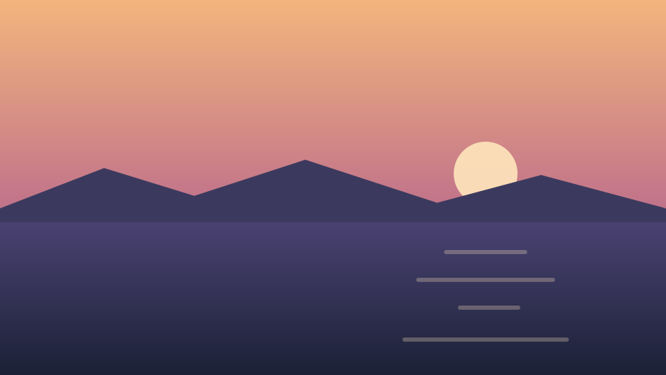

Over a picture
The rings are drawn over whatever is underneath and never sample it, so a pale
ink disappears against a pale sky. That is a colour the page has to choose:
this one sets --ripple-ink to a warm white and turns the strength up
to carry over the picture.

Over words
Nothing here is behind glass. The paragraph below can be selected, the link can be followed, and the surface is drawn across both without taking a press from either.
Water at rest is the absence of an animation rather than a slow one. A surface that shimmered on its own would be asking for attention it has no reason to want, and it would be doing so on every page it was placed on, for as long as that page was open.
Select this sentence, or follow this link, with the water running over it.
Reduced motion
Under prefers-reduced-motion this surface makes no ripples at all —
not slower ones, none. Spreading rings are the whole of what it does, and a
slower spread is still a spread. What is left is a still surface, which is what
it looks like at rest anyway.